CMS Admin Panel User Guide
A complete non-technical guide to managing content on the Group and Solar websites
1. Introduction
Welcome to your CMS (Content Management System) Admin Panel User Guide. This panel serves as the central control room for updating information, managing media, and reading inquiries submitted by visitors on your website network (Group, Solar, Concrete, and Enterprises websites).
This user guide is written specifically for content administrators. No coding knowledge is required. Keep this guide open in a separate tab while editing to refer back to guidelines, field requirements, and image dimensions.
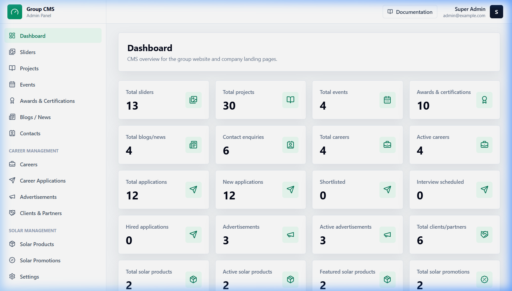
2. Login Guide
To access the administrative dashboard, navigate to the admin portal link provided by the developer.
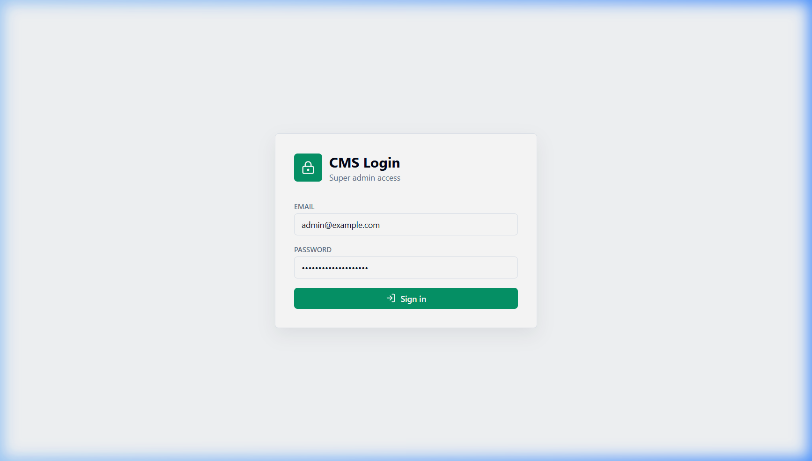
Follow these steps to log in:
- Enter your registered administrator email address.
- Enter your secure password in the password field.
- Click the Login button.
- Upon successful verification, you will be redirected directly to the statistical Dashboard overview page.
What to do if login fails:
Check if caps lock is turned on. Ensure no extra blank spaces are added at the start or end of the email address. If you've forgotten your login credentials, please contact the developer to initiate a manual credentials reset.
3. Dashboard
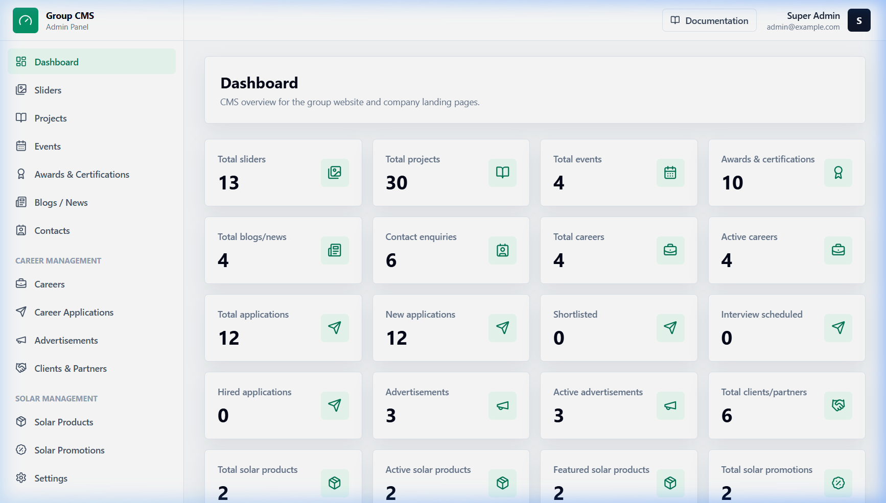
The Dashboard acts as your central control overview page. It provides a visual snapshot of the database content and applicant statuses.
Available Cards & Indicators:
- Total Sliders, Projects, Events, Blogs, and Partners: Displays the overall count of existing records in each category.
- Contact Enquiries: Keep track of incoming customer queries. Check this regularly to ensure timely follow-ups.
- Careers & Applications Funnel: Shows a live breakdown of total job applications, new submissions, shortlisted applicants, interviews scheduled, and hired candidates.
This screen is purely informational and serves as a launching pad to direct your attention to modules requiring immediate action (like new resume applications or contact inquiries).
4. Sliders / Hero Banners
Where it appears on website: Large header banner slides at the very top of each site homepage.
Use this module to change the introductory sliders, seasonal banners, or hero titles that visitors see first.
Step-by-step editing guide:
- Navigate to the Sliders page from the sidebar menu and click Add Slider (or click Edit on an existing one).
- Select the target Website (e.g. Group, Solar, Concrete, or Enterprises) to determine where the banner will display.
- Fill in the Title (main heading) and Subtitle (secondary line).
- Define a Button Text (e.g. "Learn More") and paste the destination address in the Button Link field (e.g. `/projects` or `/solar-products`).
- Upload your desktop and mobile images using the image upload tool (see Section 16 for size guide).
- Set the Order weight (e.g., set to 1 if it should show up first).
- Ensure the Status dropdown is toggled to Active. Click Save.
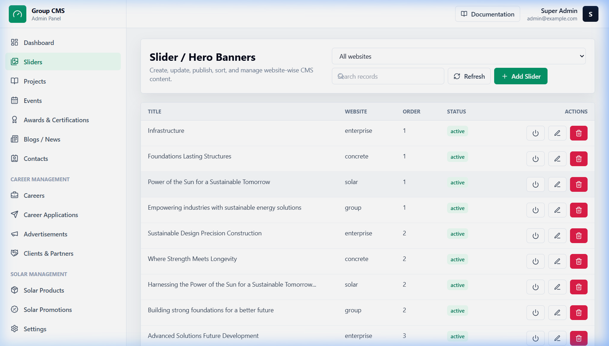
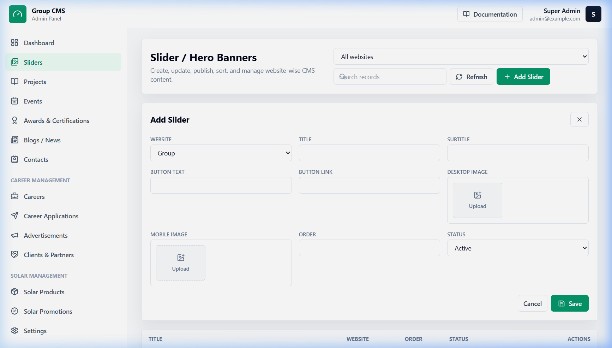
Common Mistakes:
Uploading vertical photos on the desktop view. Desktop banners require wide horizontal images, while mobile views require square or tall vertical crops. Uploading wrong layouts will crop or distort your home page banners.
5. Projects
Where it appears on website: Located in the "Portfolio" or "Our Projects" sections, and as standalone project detail pages.
Step-by-step editing guide:
- Open the Projects tab and click Add Project.
- Select the Website which owns this project.
- Fill out the Title. The system will automatically suggest a Slug (custom link identifier), but you can customize it if needed (use lowercase, hyphens, and no spaces).
- Enter a brief **Short Description** (shows up in grids/lists) and the full detail write-up in the **Description** box.
- Fill in extra metadata: **Category** (e.g. Residential, Industrial), **Location** (city/region), **Client Name**, and the **Project Date**.
- Upload a primary **Featured Image** (covers card headers) and add multiple photos to the **Gallery** field to showcase close-up details.
- Check the **Featured** box if you want this project highlighted on the website homepage.
- Set the layout **Order** and select **Active** status. Click **Save**.
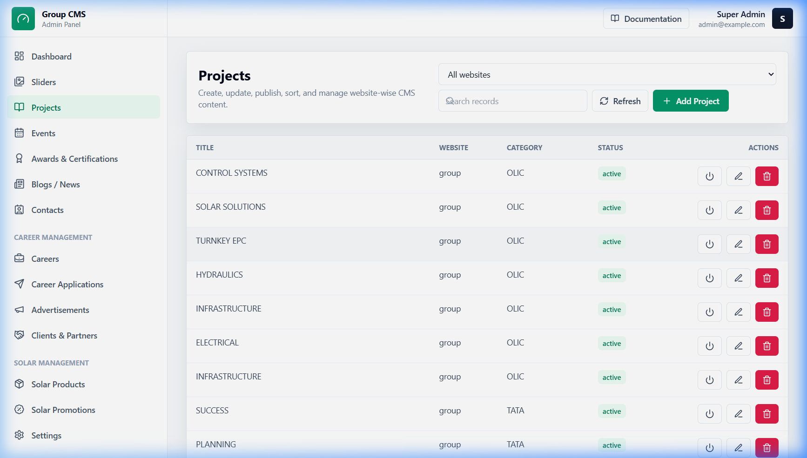
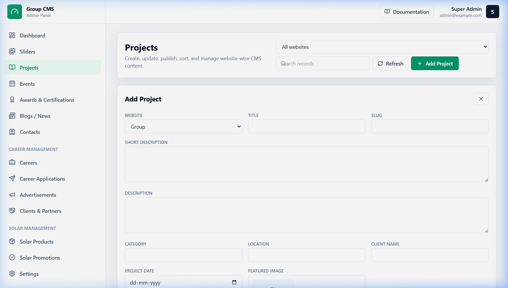
Common Mistakes:
Uploading massive camera image files directly. Gallery sections load multiple images simultaneously. Always crop and compress your gallery photos (aim for less than 500 KB per photo) to keep project pages loading quickly for mobile users.
6. Events
Where it appears on website: Appears under the "Upcoming Events", "News", or "Exhibitions" sections on the website.
Step-by-step editing guide:
- Go to the Events module and click Add Event.
- Choose the website layout where this event belongs.
- Type in the event Title, a short abstract summary, and write down details in the description.
- Pick the correct date using the **Event Date** calendar picker.
- Upload a **Featured Image** to represent the event, and choose supplementary event photographs for the **Gallery**.
- Set the **Order** value to coordinate its place on list feeds, change status to **Active**, and click **Save**.
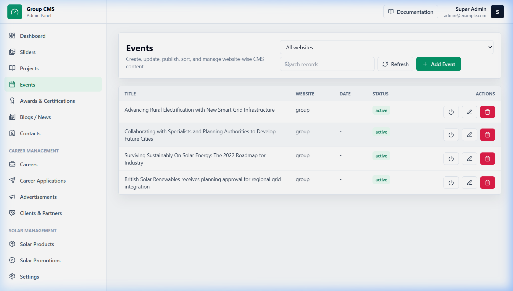
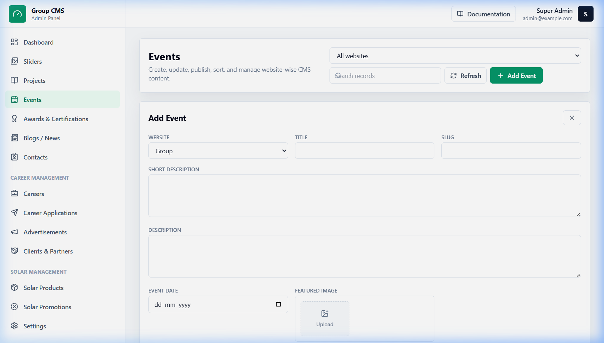
7. Awards & Certifications
Where it appears on website: In the achievements showcase grid or certifications slider on the About Us page.
Step-by-step editing guide:
- Select Awards & Certifications in the admin menu and click Add Award / Certification.
- Set the destination Website scope.
- Provide a clean, descriptive Title (e.g. "ISO 9001:2015 Quality Certification").
- Pick the **Type**: choose "Award" for corporate accolades, or "Certification" for compliance badges.
- Add a summary in **Short Description** explaining what the certificate represents.
- Upload an **Image** of the award logo, certificate document, or trophy.
- Toggle **Featured** on if this accolade represents a primary company credential.
- Assign an **Order** weight, set the status to **Active**, and click **Save**.
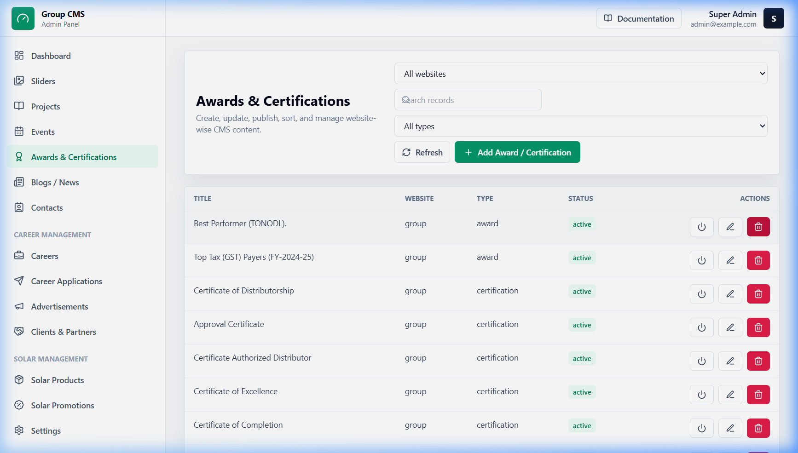
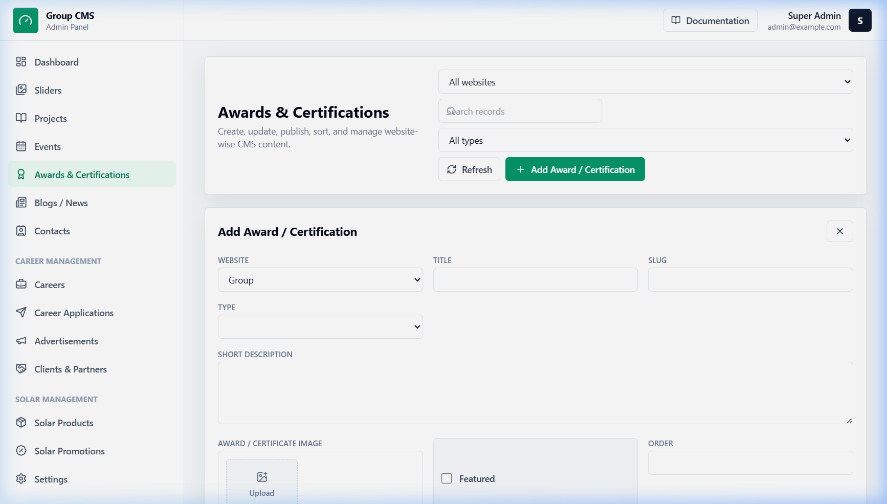
8. Blogs / Recent News
Where it appears on website: Under the main "Blog", "News", or "Insights" sections of the website.
Step-by-step editing guide:
- Click Blogs / News and hit Add Blog.
- Select the website and enter the blog Title. The page slug will generate automatically.
- Write a hook in the **Short Description** to get readers' attention from the listings page, and insert the full article content in the main text editor area.
- Upload a **Featured Image** (this will be the banner image at the top of the blog page).
- Define category labels (e.g., "Solar Updates" or "Corporate News") and enter a list of keywords in the **Tags** field.
- Record the **Author** name (who wrote the article) and select the official **Publish Date**.
- Set the **Status** to **Published** to make it live instantly. Alternatively, leave it as **Draft** to save your work privately. Click **Save**.
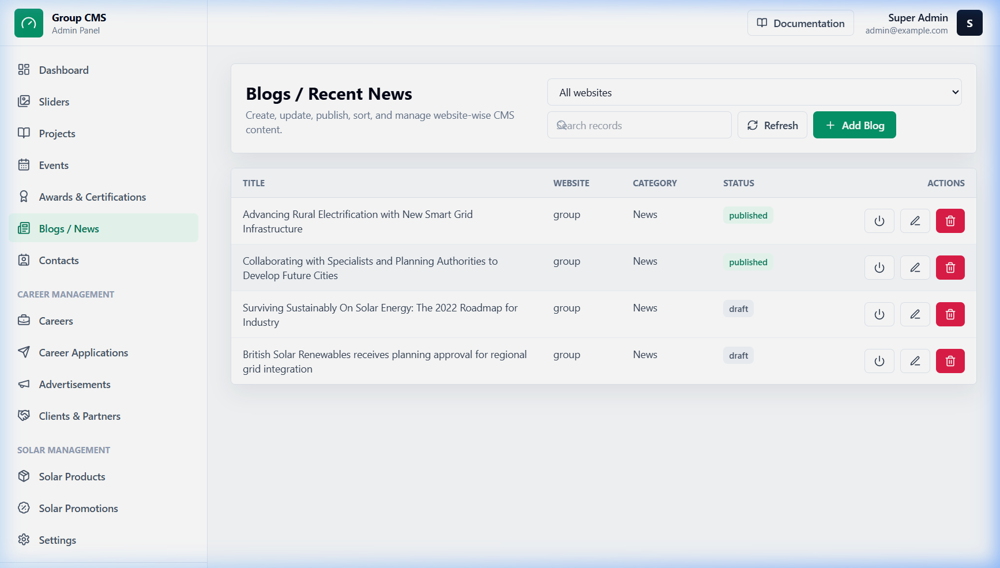
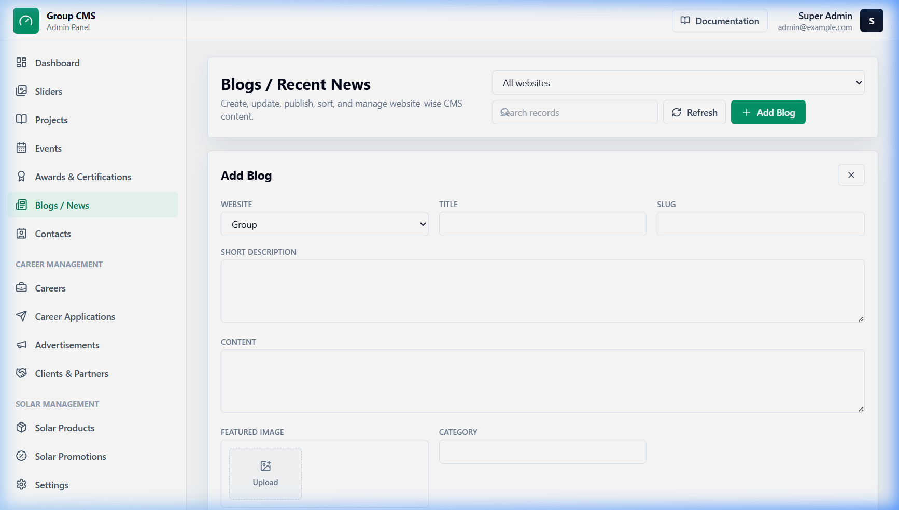
9. Contacts / Enquiries
Where it comes from: Sent automatically whenever a visitor fills out the "Get in Touch" or contact form on any of the websites.
This module stores contact details and customer requests securely in the database. You cannot create contact enquiries manually because the create button is disabled. It serves strictly as an incoming mailbox database.
How to manage inquiries:
- Select the Contacts item from the sidebar to inspect the list of inquiries.
- Click the **Edit/View** button on an enquiry to read the full query, email address, phone, subject, and the source website they reached out from.
- After reviewing the query or replying to them via email, update the **Status** dropdown:
- New: Fresh, unread query.
- Read: Opened but no response sent yet.
- Replied: You have reached out to the client.
- Closed: Inquiry is resolved and archived.
- Click **Save** to update the inquiry status tracker.
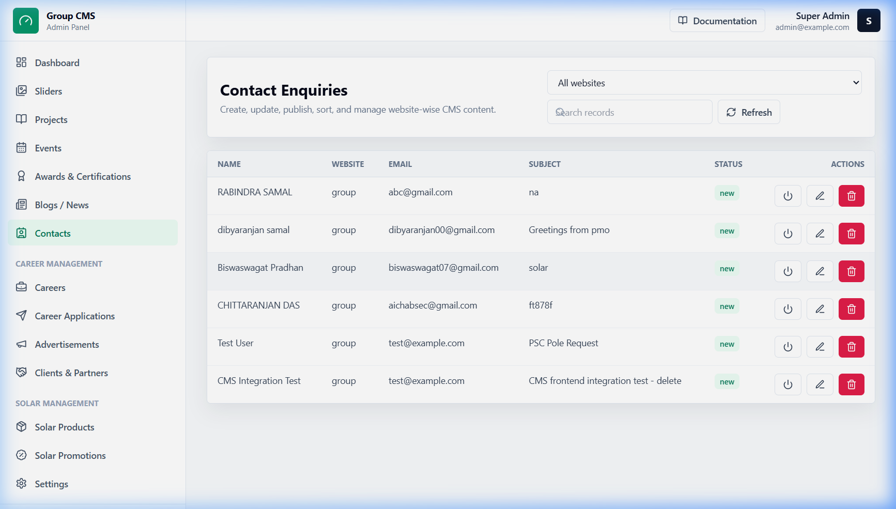
10. Careers / Job Openings
Where it appears on website: Listed in the "Careers" section, showing available employment vacancies.
Step-by-step vacancy posting guide:
- Click Careers in the sidebar and choose Add Career.
- Assign the vacancy to the correct website segment.
- Fill out the **Job Title**, **Department** (e.g. Sales, Operations), **Location** (e.g., Hybrid, New Delhi), and **Job Type** (Full-time, Part-time, Internship, or Contract).
- Provide recruitment details: expected **Experience** range, **Salary Range**, a **Short Description**, and the full **Description** detailing job details.
- Use the list boxes to detail **Responsibilities**, **Requirements**, and required **Skills** (write one item per line).
- Specify the **Application Deadline** calendar date.
- Provide a dedicated **Apply Email** address or an external **Apply Link** if applicants must use a third-party portal.
- Assign an ordering number, toggle status to **Active**, and click **Save**.
11. Career Applications
Where it comes from: Submitted directly by job seekers using the resume upload form on the Careers page.
This module operates as an internal HR database. Manual creation of applications is disabled in the UI. Open this module to review candidate profiles and download submitted resume files.
How to review applications:
- Select the Career Applications module in the sidebar.
- Find the candidate in the list, then click **Edit/View** to check the applicant's name, contact info, covering notes, and the specific job they applied for.
- Click the **Resume URL** link or download button to view/save the applicant's CV file (Vite handles the secure file download).
- Use the **Status** selector to document the applicant's current screening stage:
- New: Application received but unreviewed.
- Reviewed: CV reviewed by HR.
- Shortlisted: Candidate qualified for screening.
- Rejected: Application declined.
- Hired: Candidate successfully recruited.
- Save the form to record changes.
12. Clients & Partners
Where it appears on website: Logo slider or grid layout near the footer of the Home page or on the About Us page.
Step-by-step client/partner setup guide:
- Open the Clients & Partners module and click Add Client / Partner.
- Select the target website and type the company **Name**.
- Upload the company **Logo** image (use horizontal logos with transparent background where possible).
- Paste the company's website address in the **Website URL** field.
- Set the **Type** dropdown: select **Client** to list it under client logos, or **Partner** for associate entities.
- Assign the slider order sequence, toggle status to active, and click **Save**.
13. Solar Products
Where it appears on website: Products showcase catalog page on the Solar website.
Step-by-step product catalog guide:
- Select Solar Products in the sidebar and hit Add Solar Product.
- Fill in the **Product Title** (e.g. "Mono-PERC Solar Module 550W").
- Select the correct category (e.g., Solar Panel, Inverter, Battery, Rooftop Kit, Accessories).
- Fill in additional specification inputs: **Brand**, **Model Number**, a **Short Description**, and the full details.
- Upload the main product image in the **Featured Image** field, and supplementary product angles to the **Gallery**.
- Enter highlight lines (e.g., "25-year warranty") in the **Features** box (one line per entry).
- Under **Specifications**, write key-value pairs (formatted as `Label: Value`, one per line, e.g., `Efficiency: 21.3%`).
- Define pricing if public: input the numeric **Price**, set a pricing label (e.g. "Starts from"), and check **Show Price**.
- Set custom CTA labels (e.g., CTA Text: "Enquire Now") and insert custom links or contact form hooks in **CTA Link**.
- Tick **Featured** to highlight the product in home page sliders. Set the sorting order weight, toggle status to active, and save.
14. Image Upload Guide
Images play a critical role in the speed and visual appeal of your website. Follow these standards to maintain high visual quality without slowing down the site for mobile users.
Recommended Image Dimensions & Sizes:
- Desktop Sliders / Hero Banners: Horizontal aspect ratio (e.g.,
1920 x 700 px). File size should not exceed1 MB. - Mobile Sliders: Vertical or square aspect ratio (e.g.,
800 x 800 pxor720 x 1280 px). File size limit:300 KB. - Blog / Project Featured Images: Landscape ratio (e.g.,
1200 x 800 px). File size limit:500 KB. - Client & Partner Logos: Clean horizontal crop (e.g.,
400 x 200 px). Use PNG format with transparent backgrounds for the best visual integration.
15. Status & Visibility Guide
The **Status** selector controls whether an item is public or hidden. Understanding this prevents accidental deletion of draft work.
- Active / Published: The item is fully visible on the live website.
- Inactive / Draft: The item is saved securely in the database but is invisible to public visitors. Use this when you're still drafting content or waiting for image approvals.
- Closed (Careers): The vacancy is archived. The page will state that applications are no longer being accepted.
Always Prefer "Inactive" over "Delete"
If you are unsure whether you will need an item in the future, do not click Delete. Toggle the status to Inactive instead. Deletion permanently erases the record from the database and it cannot be recovered.
16. Ordering & Layout Guide
The numeric **Order** field controls the layout sequence of items in lists, carousels, and grid displays.
Sorting Rules:
- Ascending Order: Lower numbers are displayed first. An item with order set to
1appears before an item with order set to2. - Grouping Zeroes: If multiple items share the same order number (e.g. they are all set to
0or left empty), the system will display the most recently created items first.
17. Safe Editing Rules
Follow these safety checks to keep the website presentation professional and clean:
- Text Formatting: Write main descriptions in clear paragraphs. Avoid copy-pasting text directly from Microsoft Word or other web pages, as this can transfer hidden styles and mess up the font formatting. Copy to a plain notepad first to strip styling.
- Short Titles: Keep titles and main headings under
60 charactersso they display neatly on mobile screens. - Verify Links: When linking buttons, always double-check the URL. Use relative paths like
/projectsfor internal links, or full links starting withhttps://for external sites. - Mobile Inspections: Whenever you modify sliders, inspect the results on a smartphone to ensure that cropped views do not cut off important text or faces.
18. Troubleshooting
Refer to these solutions when experiencing issues with updates:
1. Saved updates are not appearing on the live website:
- Open the item in the admin panel and ensure the status is explicitly set to Active or Published.
- Verify that you selected the correct target **Website** (e.g., concrete updates won't display on the solar website).
- Force clear your browser's local cache (Hold down
Shiftand pressF5, or clear history settings).
2. An uploaded image is not displaying, or shows up broken:
- Open the form again, upload the file, and wait for the upload thumbnail preview to display *before* clicking Save.
- Verify that the image file type is a supported extension (.jpg, .png, or .webp).
- Check if the file is too large (compress it to below 1 MB).
3. The form is refusing to save:
- Check that all required fields (marked with red asterisks or labeled as required) are filled in.
- Check if you have entered invalid information (e.g., text inside a numeric order field or a broken link format).
4. I cannot log in:
- Check with the super-admin to verify that your account hasn't been disabled.
- Confirm that your server is running and you have a stable internet connection.